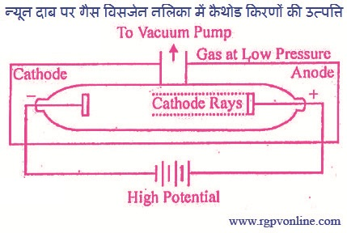

Q.5 : कैथोड किरणों के गुणों को समझाइए।
उत्तर - इलेक्ट्रॉन की खोज (Discovery of Electron)- सन् 1879 में जे.जे. टॉमसन, ने बताया कि सामान्यतः गैसें विद्युत् की सुचालक नहीं होती हैं परन्तु यदि गैस को एक विसर्जनः नली में लिया जाये जिसमें दो इलैक्ट्रोड जुड़े हों व नली के अंदर का दाब 10-2atm तक कम कर दिया जाये तथा इलैक्ट्रोडों पर उच्च वोल्टता (5000-10000 वोल्ट) लगायी जाये तो गैसों से विद्युत् का चालन होने लगता है। इन परिस्थितियों में गैस से प्रकाश पुंज निकलता है तथा प्रकाश का रंग गैस की प्रकृति पर निर्भर करता है, जैसे - हाइड्रोजन गैस लेने पर लाल और नीले रंग का मिश्रण तथा कार्बन डाइऑक्साइड गैस लेने पर सफेद रंग का प्रकाश उत्पन्न होता है। इसके आगे गैस का दाब लगभग 10-4atm तक कम कर देने से गैस में विद्युत् का चालन होता रहता है तथा ट्यूब की काँच की दीवार प्रतिदीप्ति के कारण उत्पन्न हल्के रंग के प्रकाश से चमकने लगती है। यह प्रतिदीप्ति कैथोड से निकली हुई किरणों के काँच से टकराने के कारण होती है। इन किरणों को कैथोड किरणें कहते हैं। ये किरणें ऋणावेशित कणों की बनी होती हैं, इन कणों को ही इलेक्ट्रॉन कहते हैं।

चित्र 5.1 न्यून दाब पर गैस विसर्जन नलिका में कैथोड किरणों की उत्पत्ति
कैथोड किरणों के गुण (Properties of Cathode Rays)- विलयम क्रुक्स, जे.जे. टॉमसन तथा कई अन्य वैज्ञानिकों ने कैथोड किरणों के गुणों का अध्ययन किया। वे इस निष्कर्ष पर पहुँचे कि विसर्जन नलिका में कोई भी गैस ली जाये या कैथोड किसी भी पदार्थ का बना हो, प्रत्येक दशा में एक जैसे गुणों वाली कैथोड किरणें उत्पन्न होती हैं। कैथोड किरणों के कुछ गुण निम्नलिखित हैं -
(i) यदि दोनों इलैक्ट्रोडों के मध्य में कोई अपारदर्शी वस्तु रख दी जाये तो कैथोड के सामने वाले भाग में उस वस्तु की छाया दिखाई देती है। जिससे ज्ञात होता है कि ये किरणें कैथोड से ऐनोड की ओर सीधी रेखाओं में गमन करती हैं (चित्र 5.2)।
(ii) ये किरणे विसर्जन नलिका की काँच की दीवारों से टकराने पर प्रतिदीप्ति उत्पन्न करती हैं।
चित्र 5.2 कैथोड किरणों के द्वारा प्रतिछाया का निर्माण
(iii) यदि कैथोड किरणों के मार्ग में एक हल्का पहिया (pin wheel) रख दें तो ये किरणें उसे यांत्रिक गति प्रदान कर देती हैं। इससे ज्ञात होता है कि इन किरणों में द्रव्यमान तथा गतिज ऊर्जा दोनों होती हैं तथा ये कणों से मिलकर बनी होती हैं।
चित्र 5.3 कैथोड किरणों के द्वारा यांत्रिक कार्य का सम्पादन
(iv) पेरीन ने सन् 1985 में अपने प्रयोग में यह पाया, कि कैथोड किरणें प्रबल चुम्बकीय क्षेत्र (magnetic field) या विद्युतीय क्षेत्र (electric field) में विक्षेपित होकर धनात्मक प्लेट की ओर जाती हैं। इससे ज्ञात होता है कि इन किरणों पर ऋण आवेश होता है।
चित्र 5.4 कैथोड किरणों का विद्युत् क्षेत्र में विक्षेपण
(v) कैथोड किरणें गैसों को आयनीकृत कर फोटोग्राफिक प्लेट पर प्रभाव उत्पन्न करती हैं।
(vi) कैथोड किरणें ऊष्मीय प्रभाव उत्पन्न करती हैं।
(vii) कैथोड किरणें उच्च गलनांक वाली धातुओं, जैसे - टंगस्टन, कॉपर आदि से टकराने पर X-किरणें (X-rays) उत्पन्न करती हैं।
(viii) कैथोड किरणों के लिए आवेश (e) तथा द्रव्यमान (m) का अनुपात स्थिरांक होता है। यह मान विसर्जन नलिका में ली गई गैस की प्रकृति पर निर्भर नहीं करता, अर्थात् इलेक्ट्रॉन का e/m सार्वत्रिक नियतांक (universal constant) है। इलेक्ट्रॉन का आवेश (charge of electron), 1.602x10-19 कूलॉम होता है।